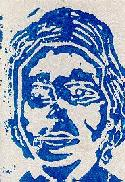

in release city

title: in release city
latin: none
cool quote: none
songs:
side 1:
wio - black holes
will simmons - what i do amuses me
phlegm - pier singing
push kings - ashley
furtips - chewing gum
nothing painted blue - wiser heads
in a spring - yip prospect
dodes'ka-den - one tree later
mr potatohead - the living end
side 2:
the mountain goats black molly *
napkin vs soda - sexmachine
bent spanner arty banner - bridget's financial reserve
brown tower - the sound of cake
bingo trappers - in my dreams
mote - arrow line
national heroes - exploiting the idea
pluxux/gonk - vivo guido
stefan & oskar - take a break
osmose - pitimini
* recorded live in charlottesville, virginia 09.02.97